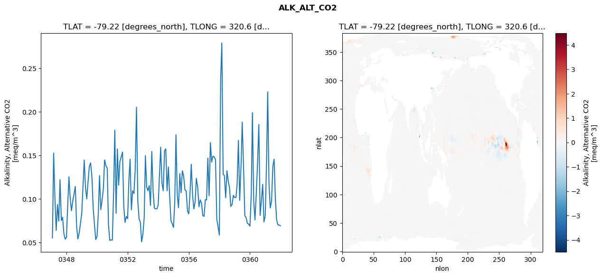
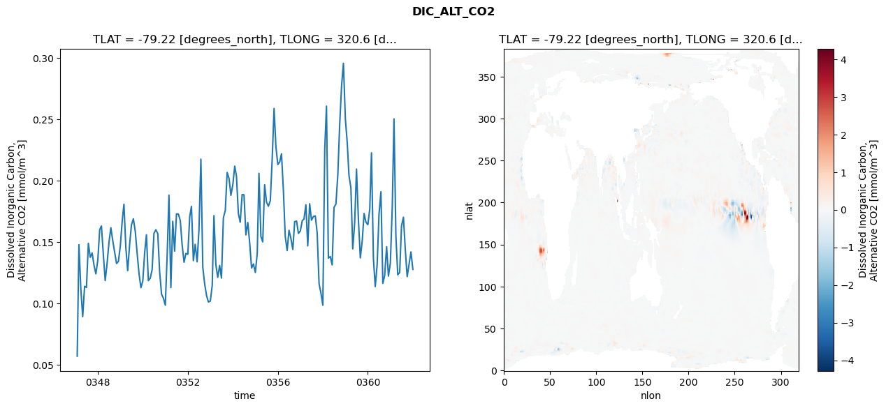
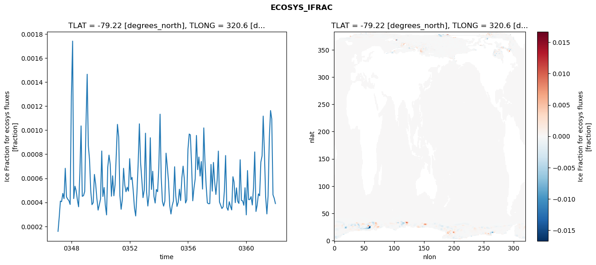
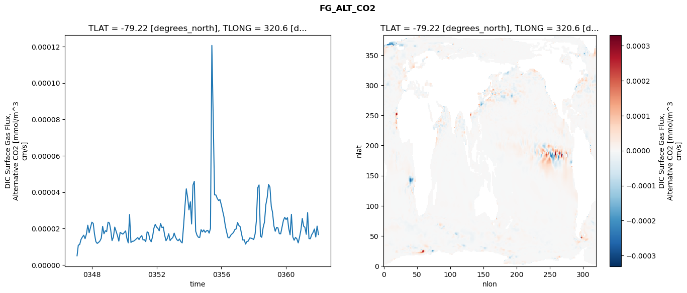

glb-dor_North_Atlantic_basin_033_1999-01-01_00132#
Simulation details#
Case: smyle.cdr-atlas-v0.glb-dor_North_Atlantic_basin_033_1999-01-01_00132.001
Basin: North_Atlantic_basin
Polygon: 33.0
Start date: 1999-01
Show code cell source Hide code cell source
import xarray as xr
import matplotlib.pyplot as plt
Show code cell source Hide code cell source
zarr_store = "/path/to/zarr/store"
# Parameters
zarr_store = "/global/cfs/projectdirs/m4746/Projects/Ocean-CDR-Atlas-v0/data/validation/smyle.cdr-atlas-v0.glb-dor_North_Atlantic_basin_033_1999-01-01_00132.001.validation.zarr"
Show code cell source Hide code cell source
%%time
ds_o = xr.open_zarr(zarr_store).compute()
ds_o
CPU times: user 674 ms, sys: 446 ms, total: 1.12 s
Wall time: 1.45 s
<xarray.Dataset> Size: 2MB
Dimensions: (nlat: 384, nlon: 320, time: 180)
Coordinates:
TLAT float64 8B -79.22
TLONG float64 8B 320.6
ULAT float64 8B -78.95
ULONG float64 8B 321.1
* time (time) object 1kB 0347-02-01 00:00:00 ... 0362-01-01 0...
z_t float32 4B 500.0
Dimensions without coordinates: nlat, nlon
Data variables:
ALK_ALT_CO2_diff (nlat, nlon) float32 492kB nan nan nan ... nan nan nan
ALK_ALT_CO2_rmse (time) float64 1kB 0.05506 0.1526 ... 0.07005 0.06908
DIC_ALT_CO2_diff (nlat, nlon) float32 492kB nan nan nan ... nan nan nan
DIC_ALT_CO2_rmse (time) float64 1kB 0.05717 0.1479 0.1116 ... 0.142 0.1278
ECOSYS_IFRAC_diff (nlat, nlon) float32 492kB nan nan nan ... nan nan nan
ECOSYS_IFRAC_rmse (time) float64 1kB 0.0001587 0.0002705 ... 0.0003895
FG_ALT_CO2_diff (nlat, nlon) float32 492kB nan nan nan ... nan nan nan
FG_ALT_CO2_rmse (time) float64 1kB 5.03e-06 1.085e-05 ... 1.67e-05xarray.Dataset
- nlat: 384
- nlon: 320
- time: 180
- TLAT()float64-79.22
- long_name :
- array of t-grid latitudes
- units :
- degrees_north
array(-79.22052261)
- TLONG()float64320.6
- long_name :
- array of t-grid longitudes
- units :
- degrees_east
array(320.56250892)
- ULAT()float64-78.95
- long_name :
- array of u-grid latitudes
- units :
- degrees_north
array(-78.95289509)
- ULONG()float64321.1
- long_name :
- array of u-grid longitudes
- units :
- degrees_east
array(321.12500894)
- time(time)object0347-02-01 00:00:00 ... 0362-01-...
- bounds :
- time_bound
- long_name :
- time
array([cftime.DatetimeNoLeap(347, 2, 1, 0, 0, 0, 0, has_year_zero=True), cftime.DatetimeNoLeap(347, 3, 1, 0, 0, 0, 0, has_year_zero=True), cftime.DatetimeNoLeap(347, 4, 1, 0, 0, 0, 0, has_year_zero=True), cftime.DatetimeNoLeap(347, 5, 1, 0, 0, 0, 0, has_year_zero=True), cftime.DatetimeNoLeap(347, 6, 1, 0, 0, 0, 0, has_year_zero=True), cftime.DatetimeNoLeap(347, 7, 1, 0, 0, 0, 0, has_year_zero=True), cftime.DatetimeNoLeap(347, 8, 1, 0, 0, 0, 0, has_year_zero=True), cftime.DatetimeNoLeap(347, 9, 1, 0, 0, 0, 0, has_year_zero=True), cftime.DatetimeNoLeap(347, 10, 1, 0, 0, 0, 0, has_year_zero=True), cftime.DatetimeNoLeap(347, 11, 1, 0, 0, 0, 0, has_year_zero=True), cftime.DatetimeNoLeap(347, 12, 1, 0, 0, 0, 0, has_year_zero=True), cftime.DatetimeNoLeap(348, 1, 1, 0, 0, 0, 0, has_year_zero=True), cftime.DatetimeNoLeap(348, 2, 1, 0, 0, 0, 0, has_year_zero=True), cftime.DatetimeNoLeap(348, 3, 1, 0, 0, 0, 0, has_year_zero=True), cftime.DatetimeNoLeap(348, 4, 1, 0, 0, 0, 0, has_year_zero=True), cftime.DatetimeNoLeap(348, 5, 1, 0, 0, 0, 0, has_year_zero=True), cftime.DatetimeNoLeap(348, 6, 1, 0, 0, 0, 0, has_year_zero=True), cftime.DatetimeNoLeap(348, 7, 1, 0, 0, 0, 0, has_year_zero=True), cftime.DatetimeNoLeap(348, 8, 1, 0, 0, 0, 0, has_year_zero=True), cftime.DatetimeNoLeap(348, 9, 1, 0, 0, 0, 0, has_year_zero=True), cftime.DatetimeNoLeap(348, 10, 1, 0, 0, 0, 0, has_year_zero=True), cftime.DatetimeNoLeap(348, 11, 1, 0, 0, 0, 0, has_year_zero=True), cftime.DatetimeNoLeap(348, 12, 1, 0, 0, 0, 0, has_year_zero=True), cftime.DatetimeNoLeap(349, 1, 1, 0, 0, 0, 0, has_year_zero=True), cftime.DatetimeNoLeap(349, 2, 1, 0, 0, 0, 0, has_year_zero=True), cftime.DatetimeNoLeap(349, 3, 1, 0, 0, 0, 0, has_year_zero=True), cftime.DatetimeNoLeap(349, 4, 1, 0, 0, 0, 0, has_year_zero=True), cftime.DatetimeNoLeap(349, 5, 1, 0, 0, 0, 0, has_year_zero=True), cftime.DatetimeNoLeap(349, 6, 1, 0, 0, 0, 0, has_year_zero=True), cftime.DatetimeNoLeap(349, 7, 1, 0, 0, 0, 0, has_year_zero=True), cftime.DatetimeNoLeap(349, 8, 1, 0, 0, 0, 0, has_year_zero=True), cftime.DatetimeNoLeap(349, 9, 1, 0, 0, 0, 0, has_year_zero=True), cftime.DatetimeNoLeap(349, 10, 1, 0, 0, 0, 0, has_year_zero=True), cftime.DatetimeNoLeap(349, 11, 1, 0, 0, 0, 0, has_year_zero=True), cftime.DatetimeNoLeap(349, 12, 1, 0, 0, 0, 0, has_year_zero=True), cftime.DatetimeNoLeap(350, 1, 1, 0, 0, 0, 0, has_year_zero=True), cftime.DatetimeNoLeap(350, 2, 1, 0, 0, 0, 0, has_year_zero=True), cftime.DatetimeNoLeap(350, 3, 1, 0, 0, 0, 0, has_year_zero=True), cftime.DatetimeNoLeap(350, 4, 1, 0, 0, 0, 0, has_year_zero=True), cftime.DatetimeNoLeap(350, 5, 1, 0, 0, 0, 0, has_year_zero=True), cftime.DatetimeNoLeap(350, 6, 1, 0, 0, 0, 0, has_year_zero=True), cftime.DatetimeNoLeap(350, 7, 1, 0, 0, 0, 0, has_year_zero=True), cftime.DatetimeNoLeap(350, 8, 1, 0, 0, 0, 0, has_year_zero=True), cftime.DatetimeNoLeap(350, 9, 1, 0, 0, 0, 0, has_year_zero=True), cftime.DatetimeNoLeap(350, 10, 1, 0, 0, 0, 0, has_year_zero=True), cftime.DatetimeNoLeap(350, 11, 1, 0, 0, 0, 0, has_year_zero=True), cftime.DatetimeNoLeap(350, 12, 1, 0, 0, 0, 0, has_year_zero=True), cftime.DatetimeNoLeap(351, 1, 1, 0, 0, 0, 0, has_year_zero=True), cftime.DatetimeNoLeap(351, 2, 1, 0, 0, 0, 0, has_year_zero=True), cftime.DatetimeNoLeap(351, 3, 1, 0, 0, 0, 0, has_year_zero=True), cftime.DatetimeNoLeap(351, 4, 1, 0, 0, 0, 0, has_year_zero=True), cftime.DatetimeNoLeap(351, 5, 1, 0, 0, 0, 0, has_year_zero=True), cftime.DatetimeNoLeap(351, 6, 1, 0, 0, 0, 0, has_year_zero=True), cftime.DatetimeNoLeap(351, 7, 1, 0, 0, 0, 0, has_year_zero=True), cftime.DatetimeNoLeap(351, 8, 1, 0, 0, 0, 0, has_year_zero=True), cftime.DatetimeNoLeap(351, 9, 1, 0, 0, 0, 0, has_year_zero=True), cftime.DatetimeNoLeap(351, 10, 1, 0, 0, 0, 0, has_year_zero=True), cftime.DatetimeNoLeap(351, 11, 1, 0, 0, 0, 0, has_year_zero=True), cftime.DatetimeNoLeap(351, 12, 1, 0, 0, 0, 0, has_year_zero=True), cftime.DatetimeNoLeap(352, 1, 1, 0, 0, 0, 0, has_year_zero=True), cftime.DatetimeNoLeap(352, 2, 1, 0, 0, 0, 0, has_year_zero=True), cftime.DatetimeNoLeap(352, 3, 1, 0, 0, 0, 0, has_year_zero=True), cftime.DatetimeNoLeap(352, 4, 1, 0, 0, 0, 0, has_year_zero=True), cftime.DatetimeNoLeap(352, 5, 1, 0, 0, 0, 0, has_year_zero=True), cftime.DatetimeNoLeap(352, 6, 1, 0, 0, 0, 0, has_year_zero=True), cftime.DatetimeNoLeap(352, 7, 1, 0, 0, 0, 0, has_year_zero=True), cftime.DatetimeNoLeap(352, 8, 1, 0, 0, 0, 0, has_year_zero=True), cftime.DatetimeNoLeap(352, 9, 1, 0, 0, 0, 0, has_year_zero=True), cftime.DatetimeNoLeap(352, 10, 1, 0, 0, 0, 0, has_year_zero=True), cftime.DatetimeNoLeap(352, 11, 1, 0, 0, 0, 0, has_year_zero=True), cftime.DatetimeNoLeap(352, 12, 1, 0, 0, 0, 0, has_year_zero=True), cftime.DatetimeNoLeap(353, 1, 1, 0, 0, 0, 0, has_year_zero=True), cftime.DatetimeNoLeap(353, 2, 1, 0, 0, 0, 0, has_year_zero=True), cftime.DatetimeNoLeap(353, 3, 1, 0, 0, 0, 0, has_year_zero=True), cftime.DatetimeNoLeap(353, 4, 1, 0, 0, 0, 0, has_year_zero=True), cftime.DatetimeNoLeap(353, 5, 1, 0, 0, 0, 0, has_year_zero=True), cftime.DatetimeNoLeap(353, 6, 1, 0, 0, 0, 0, has_year_zero=True), cftime.DatetimeNoLeap(353, 7, 1, 0, 0, 0, 0, has_year_zero=True), cftime.DatetimeNoLeap(353, 8, 1, 0, 0, 0, 0, has_year_zero=True), cftime.DatetimeNoLeap(353, 9, 1, 0, 0, 0, 0, has_year_zero=True), cftime.DatetimeNoLeap(353, 10, 1, 0, 0, 0, 0, has_year_zero=True), cftime.DatetimeNoLeap(353, 11, 1, 0, 0, 0, 0, has_year_zero=True), cftime.DatetimeNoLeap(353, 12, 1, 0, 0, 0, 0, has_year_zero=True), cftime.DatetimeNoLeap(354, 1, 1, 0, 0, 0, 0, has_year_zero=True), cftime.DatetimeNoLeap(354, 2, 1, 0, 0, 0, 0, has_year_zero=True), cftime.DatetimeNoLeap(354, 3, 1, 0, 0, 0, 0, has_year_zero=True), cftime.DatetimeNoLeap(354, 4, 1, 0, 0, 0, 0, has_year_zero=True), cftime.DatetimeNoLeap(354, 5, 1, 0, 0, 0, 0, has_year_zero=True), cftime.DatetimeNoLeap(354, 6, 1, 0, 0, 0, 0, has_year_zero=True), cftime.DatetimeNoLeap(354, 7, 1, 0, 0, 0, 0, has_year_zero=True), cftime.DatetimeNoLeap(354, 8, 1, 0, 0, 0, 0, has_year_zero=True), cftime.DatetimeNoLeap(354, 9, 1, 0, 0, 0, 0, has_year_zero=True), cftime.DatetimeNoLeap(354, 10, 1, 0, 0, 0, 0, has_year_zero=True), cftime.DatetimeNoLeap(354, 11, 1, 0, 0, 0, 0, has_year_zero=True), cftime.DatetimeNoLeap(354, 12, 1, 0, 0, 0, 0, has_year_zero=True), cftime.DatetimeNoLeap(355, 1, 1, 0, 0, 0, 0, has_year_zero=True), cftime.DatetimeNoLeap(355, 2, 1, 0, 0, 0, 0, has_year_zero=True), cftime.DatetimeNoLeap(355, 3, 1, 0, 0, 0, 0, has_year_zero=True), cftime.DatetimeNoLeap(355, 4, 1, 0, 0, 0, 0, has_year_zero=True), cftime.DatetimeNoLeap(355, 5, 1, 0, 0, 0, 0, has_year_zero=True), cftime.DatetimeNoLeap(355, 6, 1, 0, 0, 0, 0, has_year_zero=True), cftime.DatetimeNoLeap(355, 7, 1, 0, 0, 0, 0, has_year_zero=True), cftime.DatetimeNoLeap(355, 8, 1, 0, 0, 0, 0, has_year_zero=True), cftime.DatetimeNoLeap(355, 9, 1, 0, 0, 0, 0, has_year_zero=True), cftime.DatetimeNoLeap(355, 10, 1, 0, 0, 0, 0, has_year_zero=True), cftime.DatetimeNoLeap(355, 11, 1, 0, 0, 0, 0, has_year_zero=True), cftime.DatetimeNoLeap(355, 12, 1, 0, 0, 0, 0, has_year_zero=True), cftime.DatetimeNoLeap(356, 1, 1, 0, 0, 0, 0, has_year_zero=True), cftime.DatetimeNoLeap(356, 2, 1, 0, 0, 0, 0, has_year_zero=True), cftime.DatetimeNoLeap(356, 3, 1, 0, 0, 0, 0, has_year_zero=True), cftime.DatetimeNoLeap(356, 4, 1, 0, 0, 0, 0, has_year_zero=True), cftime.DatetimeNoLeap(356, 5, 1, 0, 0, 0, 0, has_year_zero=True), cftime.DatetimeNoLeap(356, 6, 1, 0, 0, 0, 0, has_year_zero=True), cftime.DatetimeNoLeap(356, 7, 1, 0, 0, 0, 0, has_year_zero=True), cftime.DatetimeNoLeap(356, 8, 1, 0, 0, 0, 0, has_year_zero=True), cftime.DatetimeNoLeap(356, 9, 1, 0, 0, 0, 0, has_year_zero=True), cftime.DatetimeNoLeap(356, 10, 1, 0, 0, 0, 0, has_year_zero=True), cftime.DatetimeNoLeap(356, 11, 1, 0, 0, 0, 0, has_year_zero=True), cftime.DatetimeNoLeap(356, 12, 1, 0, 0, 0, 0, has_year_zero=True), cftime.DatetimeNoLeap(357, 1, 1, 0, 0, 0, 0, has_year_zero=True), cftime.DatetimeNoLeap(357, 2, 1, 0, 0, 0, 0, has_year_zero=True), cftime.DatetimeNoLeap(357, 3, 1, 0, 0, 0, 0, has_year_zero=True), cftime.DatetimeNoLeap(357, 4, 1, 0, 0, 0, 0, has_year_zero=True), cftime.DatetimeNoLeap(357, 5, 1, 0, 0, 0, 0, has_year_zero=True), cftime.DatetimeNoLeap(357, 6, 1, 0, 0, 0, 0, has_year_zero=True), cftime.DatetimeNoLeap(357, 7, 1, 0, 0, 0, 0, has_year_zero=True), cftime.DatetimeNoLeap(357, 8, 1, 0, 0, 0, 0, has_year_zero=True), cftime.DatetimeNoLeap(357, 9, 1, 0, 0, 0, 0, has_year_zero=True), cftime.DatetimeNoLeap(357, 10, 1, 0, 0, 0, 0, has_year_zero=True), cftime.DatetimeNoLeap(357, 11, 1, 0, 0, 0, 0, has_year_zero=True), cftime.DatetimeNoLeap(357, 12, 1, 0, 0, 0, 0, has_year_zero=True), cftime.DatetimeNoLeap(358, 1, 1, 0, 0, 0, 0, has_year_zero=True), cftime.DatetimeNoLeap(358, 2, 1, 0, 0, 0, 0, has_year_zero=True), cftime.DatetimeNoLeap(358, 3, 1, 0, 0, 0, 0, has_year_zero=True), cftime.DatetimeNoLeap(358, 4, 1, 0, 0, 0, 0, has_year_zero=True), cftime.DatetimeNoLeap(358, 5, 1, 0, 0, 0, 0, has_year_zero=True), cftime.DatetimeNoLeap(358, 6, 1, 0, 0, 0, 0, has_year_zero=True), cftime.DatetimeNoLeap(358, 7, 1, 0, 0, 0, 0, has_year_zero=True), cftime.DatetimeNoLeap(358, 8, 1, 0, 0, 0, 0, has_year_zero=True), cftime.DatetimeNoLeap(358, 9, 1, 0, 0, 0, 0, has_year_zero=True), cftime.DatetimeNoLeap(358, 10, 1, 0, 0, 0, 0, has_year_zero=True), cftime.DatetimeNoLeap(358, 11, 1, 0, 0, 0, 0, has_year_zero=True), cftime.DatetimeNoLeap(358, 12, 1, 0, 0, 0, 0, has_year_zero=True), cftime.DatetimeNoLeap(359, 1, 1, 0, 0, 0, 0, has_year_zero=True), cftime.DatetimeNoLeap(359, 2, 1, 0, 0, 0, 0, has_year_zero=True), cftime.DatetimeNoLeap(359, 3, 1, 0, 0, 0, 0, has_year_zero=True), cftime.DatetimeNoLeap(359, 4, 1, 0, 0, 0, 0, has_year_zero=True), cftime.DatetimeNoLeap(359, 5, 1, 0, 0, 0, 0, has_year_zero=True), cftime.DatetimeNoLeap(359, 6, 1, 0, 0, 0, 0, has_year_zero=True), cftime.DatetimeNoLeap(359, 7, 1, 0, 0, 0, 0, has_year_zero=True), cftime.DatetimeNoLeap(359, 8, 1, 0, 0, 0, 0, has_year_zero=True), cftime.DatetimeNoLeap(359, 9, 1, 0, 0, 0, 0, has_year_zero=True), cftime.DatetimeNoLeap(359, 10, 1, 0, 0, 0, 0, has_year_zero=True), cftime.DatetimeNoLeap(359, 11, 1, 0, 0, 0, 0, has_year_zero=True), cftime.DatetimeNoLeap(359, 12, 1, 0, 0, 0, 0, has_year_zero=True), cftime.DatetimeNoLeap(360, 1, 1, 0, 0, 0, 0, has_year_zero=True), cftime.DatetimeNoLeap(360, 2, 1, 0, 0, 0, 0, has_year_zero=True), cftime.DatetimeNoLeap(360, 3, 1, 0, 0, 0, 0, has_year_zero=True), cftime.DatetimeNoLeap(360, 4, 1, 0, 0, 0, 0, has_year_zero=True), cftime.DatetimeNoLeap(360, 5, 1, 0, 0, 0, 0, has_year_zero=True), cftime.DatetimeNoLeap(360, 6, 1, 0, 0, 0, 0, has_year_zero=True), cftime.DatetimeNoLeap(360, 7, 1, 0, 0, 0, 0, has_year_zero=True), cftime.DatetimeNoLeap(360, 8, 1, 0, 0, 0, 0, has_year_zero=True), cftime.DatetimeNoLeap(360, 9, 1, 0, 0, 0, 0, has_year_zero=True), cftime.DatetimeNoLeap(360, 10, 1, 0, 0, 0, 0, has_year_zero=True), cftime.DatetimeNoLeap(360, 11, 1, 0, 0, 0, 0, has_year_zero=True), cftime.DatetimeNoLeap(360, 12, 1, 0, 0, 0, 0, has_year_zero=True), cftime.DatetimeNoLeap(361, 1, 1, 0, 0, 0, 0, has_year_zero=True), cftime.DatetimeNoLeap(361, 2, 1, 0, 0, 0, 0, has_year_zero=True), cftime.DatetimeNoLeap(361, 3, 1, 0, 0, 0, 0, has_year_zero=True), cftime.DatetimeNoLeap(361, 4, 1, 0, 0, 0, 0, has_year_zero=True), cftime.DatetimeNoLeap(361, 5, 1, 0, 0, 0, 0, has_year_zero=True), cftime.DatetimeNoLeap(361, 6, 1, 0, 0, 0, 0, has_year_zero=True), cftime.DatetimeNoLeap(361, 7, 1, 0, 0, 0, 0, has_year_zero=True), cftime.DatetimeNoLeap(361, 8, 1, 0, 0, 0, 0, has_year_zero=True), cftime.DatetimeNoLeap(361, 9, 1, 0, 0, 0, 0, has_year_zero=True), cftime.DatetimeNoLeap(361, 10, 1, 0, 0, 0, 0, has_year_zero=True), cftime.DatetimeNoLeap(361, 11, 1, 0, 0, 0, 0, has_year_zero=True), cftime.DatetimeNoLeap(361, 12, 1, 0, 0, 0, 0, has_year_zero=True), cftime.DatetimeNoLeap(362, 1, 1, 0, 0, 0, 0, has_year_zero=True)], dtype=object) - z_t()float32500.0
- long_name :
- depth from surface to midpoint of layer
- positive :
- down
- units :
- centimeters
- valid_max :
- 537500.0
- valid_min :
- 500.0
array(500., dtype=float32)
- ALK_ALT_CO2_diff(nlat, nlon)float32nan nan nan nan ... nan nan nan nan
- cell_methods :
- time: mean
- grid_loc :
- 3111
- long_name :
- Alkalinity, Alternative CO2
- units :
- meq/m^3
array([[ nan, nan, nan, ..., nan, nan, nan], [ nan, nan, nan, ..., nan, nan, nan], [0.09570312, 0.05224609, 0.03588867, ..., nan, nan, nan], ..., [ nan, nan, nan, ..., nan, nan, nan], [ nan, nan, nan, ..., nan, nan, nan], [ nan, nan, nan, ..., nan, nan, nan]], dtype=float32) - ALK_ALT_CO2_rmse(time)float640.05506 0.1526 ... 0.07005 0.06908
- cell_methods :
- time: mean
- grid_loc :
- 3111
- long_name :
- Alkalinity, Alternative CO2
- units :
- meq/m^3
array([0.05506404, 0.15260541, 0.10020545, 0.0637935 , 0.09351417, 0.07446734, 0.1221038 , 0.07509171, 0.07884026, 0.06011968, 0.05378903, 0.05574963, 0.09410053, 0.12535214, 0.10024364, 0.08647945, 0.09780755, 0.10562288, 0.11428537, 0.06788697, 0.05401421, 0.06068584, 0.07197804, 0.08338398, 0.11552463, 0.14458531, 0.11250675, 0.10000475, 0.12001015, 0.13730981, 0.14134785, 0.12530613, 0.08921536, 0.07032412, 0.05332933, 0.05675429, 0.08407647, 0.12673465, 0.08765301, 0.09807763, 0.11193674, 0.14467169, 0.13813822, 0.13522729, 0.07044893, 0.05235626, 0.05295827, 0.05260741, 0.10821841, 0.17892111, 0.0833523 , 0.15747475, 0.11575928, 0.14299871, 0.14806255, 0.15382757, 0.0911503 , 0.07298161, 0.07987445, 0.07730896, 0.122328 , 0.14562632, 0.08751961, 0.1093108 , 0.10615601, 0.13374294, 0.20524058, 0.09779928, 0.07716643, 0.0732389 , 0.05071117, 0.05958281, 0.07856794, 0.14973353, 0.11369363, 0.10935967, 0.11525895, 0.09251594, 0.15442844, 0.10877388, 0.08942938, 0.08857298, 0.08848857, 0.09285128, 0.12845382, 0.15936871, 0.11816682, 0.10936671, 0.15520346, 0.15743057, 0.10931168, 0.13679273, 0.10390652, 0.07493303, 0.07160729, 0.06725238, 0.09679683, 0.1736396 , 0.10468228, 0.08984499, 0.12911159, 0.10705357, 0.13229824, 0.12596651, 0.11038175, 0.10903469, 0.08572944, 0.08279728, 0.10849569, 0.13970694, 0.10487387, 0.08845778, 0.09623703, 0.12362977, 0.11384851, 0.09092344, 0.09885823, 0.09500819, 0.08071891, 0.08000795, 0.09918059, 0.09880078, 0.14686498, 0.10358866, 0.16463502, 0.14217356, 0.14907864, 0.14806509, 0.14516373, 0.07627815, 0.06781166, 0.05850425, 0.23768601, 0.27899939, 0.12826454, 0.12680023, 0.10135422, 0.13235928, 0.12014043, 0.11244236, 0.0913112 , 0.09370242, 0.10414285, 0.1015992 , 0.10153215, 0.11683297, 0.16721555, 0.09829219, 0.13597414, 0.18803427, 0.13694646, 0.08068231, 0.07852557, 0.07197726, 0.07113645, 0.06866849, 0.10423744, 0.19895977, 0.09789207, 0.07589216, 0.10588685, 0.14039635, 0.18536839, 0.08106455, 0.0981097 , 0.11674874, 0.0736118 , 0.08030407, 0.14143622, 0.22288472, 0.11709973, 0.08954424, 0.09753303, 0.13729722, 0.14556177, 0.09868415, 0.07563353, 0.06995722, 0.07005339, 0.06907501]) - DIC_ALT_CO2_diff(nlat, nlon)float32nan nan nan nan ... nan nan nan nan
- cell_methods :
- time: mean
- grid_loc :
- 3111
- long_name :
- Dissolved Inorganic Carbon, Alternative CO2
- units :
- mmol/m^3
array([[ nan, nan, nan, ..., nan, nan, nan], [ nan, nan, nan, ..., nan, nan, nan], [0.09228516, 0.04296875, 0.03051758, ..., nan, nan, nan], ..., [ nan, nan, nan, ..., nan, nan, nan], [ nan, nan, nan, ..., nan, nan, nan], [ nan, nan, nan, ..., nan, nan, nan]], dtype=float32) - DIC_ALT_CO2_rmse(time)float640.05717 0.1479 ... 0.142 0.1278
- cell_methods :
- time: mean
- grid_loc :
- 3111
- long_name :
- Dissolved Inorganic Carbon, Alternative CO2
- units :
- mmol/m^3
array([0.05716943, 0.1479054 , 0.11163719, 0.08934506, 0.11407355, 0.11308832, 0.14903274, 0.1376445 , 0.141202 , 0.13110062, 0.12416909, 0.13530739, 0.16014361, 0.16314008, 0.13986586, 0.11867895, 0.13283918, 0.14964899, 0.16173164, 0.1510025 , 0.14207425, 0.13260107, 0.13427896, 0.14664131, 0.16734281, 0.18085691, 0.14538666, 0.12676959, 0.14806639, 0.16399165, 0.16898524, 0.15859059, 0.140958 , 0.12416692, 0.11294268, 0.11842691, 0.14187424, 0.15595252, 0.11865372, 0.12055337, 0.12756474, 0.15714153, 0.16005397, 0.15687095, 0.12588968, 0.10757157, 0.10441311, 0.09864377, 0.14076663, 0.1882414 , 0.11297598, 0.16695732, 0.14263317, 0.17295094, 0.17287376, 0.16747098, 0.14770711, 0.13361868, 0.14075723, 0.14009242, 0.17081494, 0.17913422, 0.13494465, 0.14817197, 0.13391338, 0.16027929, 0.2175128 , 0.12945741, 0.11609537, 0.10647668, 0.10125222, 0.10201475, 0.11481942, 0.17156334, 0.13163833, 0.12133018, 0.13101131, 0.12076152, 0.16983071, 0.17580244, 0.20668517, 0.20172545, 0.18810863, 0.19675506, 0.21185586, 0.20362277, 0.17324562, 0.16618642, 0.18868129, 0.18849276, 0.15585441, 0.16600943, 0.14963228, 0.12892549, 0.13220382, 0.12532369, 0.14078886, 0.20599954, 0.15475153, 0.15015231, 0.19667637, 0.18267903, 0.17916453, 0.18380936, 0.2169162 , 0.25879078, 0.22747858, 0.21312905, 0.21532699, 0.2218889 , 0.19246178, 0.15470887, 0.14313854, 0.15960978, 0.15305971, 0.14394182, 0.16659828, 0.16715918, 0.15710097, 0.15901805, 0.16738347, 0.16870879, 0.18043763, 0.14691584, 0.18126304, 0.16784103, 0.17085123, 0.17131044, 0.15744737, 0.11607695, 0.10854254, 0.09861473, 0.22579922, 0.26065444, 0.13699986, 0.13831229, 0.13144152, 0.17813077, 0.18108258, 0.20479444, 0.24530157, 0.27733132, 0.29553146, 0.25058877, 0.23063917, 0.20420852, 0.19422265, 0.14451728, 0.16538343, 0.20945232, 0.16815646, 0.13716524, 0.15057064, 0.17332076, 0.16621718, 0.16414174, 0.17694959, 0.22263943, 0.13686388, 0.1137494 , 0.1318003 , 0.17262511, 0.19098917, 0.11642815, 0.12283689, 0.1462238 , 0.12235537, 0.13276411, 0.17858545, 0.25028076, 0.15471912, 0.12337438, 0.12526176, 0.16304764, 0.17023739, 0.14340244, 0.12191551, 0.13230961, 0.14200293, 0.12782314]) - ECOSYS_IFRAC_diff(nlat, nlon)float32nan nan nan nan ... nan nan nan nan
- cell_methods :
- time: mean
- grid_loc :
- 2110
- long_name :
- Ice Fraction for ecosys fluxes
- units :
- fraction
array([[ nan, nan, nan, ..., nan, nan, nan], [ nan, nan, nan, ..., nan, nan, nan], [-1.0329485e-04, -3.2305717e-05, -1.6641617e-04, ..., nan, nan, nan], ..., [ nan, nan, nan, ..., nan, nan, nan], [ nan, nan, nan, ..., nan, nan, nan], [ nan, nan, nan, ..., nan, nan, nan]], dtype=float32) - ECOSYS_IFRAC_rmse(time)float640.0001587 0.0002705 ... 0.0003895
- cell_methods :
- time: mean
- grid_loc :
- 2110
- long_name :
- Ice Fraction for ecosys fluxes
- units :
- fraction
array([0.00015865, 0.00027055, 0.00041002, 0.00040541, 0.00047418, 0.00043019, 0.00068274, 0.00044499, 0.00042636, 0.00041341, 0.00038238, 0.00128374, 0.00174001, 0.00043114, 0.00053386, 0.00049636, 0.000419 , 0.00036301, 0.00063759, 0.001035 , 0.00044987, 0.00045539, 0.00049022, 0.00103232, 0.00146439, 0.00087318, 0.00075363, 0.00049572, 0.00038038, 0.00039678, 0.00063195, 0.00055201, 0.00043401, 0.00033543, 0.00037906, 0.0004273 , 0.00082652, 0.0004485 , 0.00052307, 0.00037645, 0.0002954 , 0.00069231, 0.00079209, 0.00071552, 0.00045074, 0.00062014, 0.00045428, 0.00054654, 0.00080665, 0.00104786, 0.00094441, 0.00045668, 0.00034226, 0.00042352, 0.00068266, 0.00054253, 0.00048809, 0.00052565, 0.00049334, 0.00076274, 0.00058818, 0.00060737, 0.00049244, 0.00035271, 0.00028669, 0.00047116, 0.00071798, 0.00105232, 0.00073131, 0.0005894 , 0.00043918, 0.00050148, 0.00097444, 0.00048486, 0.00036925, 0.00046191, 0.00093652, 0.0005072 , 0.00065838, 0.00044917, 0.00039413, 0.00050658, 0.00048823, 0.00069336, 0.00113263, 0.00061313, 0.00040749, 0.0003685 , 0.00041041, 0.00080843, 0.00069941, 0.00057153, 0.00037264, 0.00030299, 0.00037191, 0.00041087, 0.00069551, 0.00045398, 0.00036605, 0.00039921, 0.00050897, 0.0004148 , 0.00060412, 0.00070066, 0.00059465, 0.00039432, 0.00042017, 0.00084258, 0.0009675 , 0.00096117, 0.00071377, 0.00041264, 0.0005204 , 0.00059569, 0.00095584, 0.00067181, 0.00077651, 0.00061834, 0.00073902, 0.00051006, 0.00101846, 0.00075081, 0.00054002, 0.00039572, 0.00038817, 0.00038943, 0.00071491, 0.00049298, 0.00073171, 0.00056661, 0.00046539, 0.00058012, 0.00082579, 0.00040241, 0.00037503, 0.00034855, 0.00036286, 0.00049199, 0.00078896, 0.00035649, 0.00033387, 0.00040505, 0.0003671 , 0.00033689, 0.00061268, 0.00056829, 0.00039727, 0.00052022, 0.00040802, 0.00039098, 0.00075381, 0.00041571, 0.00041208, 0.00037541, 0.00052126, 0.0002958 , 0.00066405, 0.00042239, 0.0004234 , 0.00044745, 0.00037779, 0.0005207 , 0.00081886, 0.00032399, 0.00037699, 0.00047006, 0.00045448, 0.00073467, 0.00078664, 0.00111655, 0.00080592, 0.00044436, 0.00030353, 0.00045204, 0.00092988, 0.00116265, 0.00109306, 0.00046253, 0.00043404, 0.00038953]) - FG_ALT_CO2_diff(nlat, nlon)float32nan nan nan nan ... nan nan nan nan
- cell_methods :
- time: mean
- grid_loc :
- 2110
- long_name :
- DIC Surface Gas Flux, Alternative CO2
- units :
- mmol/m^3 cm/s
array([[ nan, nan, nan, ..., nan, nan, nan], [ nan, nan, nan, ..., nan, nan, nan], [1.17124500e-07, 1.07215556e-07, 1.77699121e-07, ..., nan, nan, nan], ..., [ nan, nan, nan, ..., nan, nan, nan], [ nan, nan, nan, ..., nan, nan, nan], [ nan, nan, nan, ..., nan, nan, nan]], dtype=float32) - FG_ALT_CO2_rmse(time)float645.03e-06 1.085e-05 ... 1.67e-05
- cell_methods :
- time: mean
- grid_loc :
- 2110
- long_name :
- DIC Surface Gas Flux, Alternative CO2
- units :
- mmol/m^3 cm/s
array([5.02990005e-06, 1.08468155e-05, 1.12087275e-05, 1.39585302e-05, 1.53251976e-05, 1.63486383e-05, 1.44416809e-05, 1.70929239e-05, 2.18430361e-05, 1.77119578e-05, 2.05242266e-05, 2.34822533e-05, 2.28270076e-05, 1.70602796e-05, 1.28220325e-05, 1.18356857e-05, 1.23707646e-05, 1.31423684e-05, 1.46716583e-05, 2.12106946e-05, 1.71357831e-05, 1.88109879e-05, 1.83559899e-05, 2.34761310e-05, 2.30304144e-05, 1.93819317e-05, 1.33722126e-05, 1.52673716e-05, 2.08052157e-05, 1.85606398e-05, 1.61240029e-05, 1.30786402e-05, 1.78870789e-05, 1.73772977e-05, 1.69112536e-05, 1.77905602e-05, 1.86871276e-05, 1.47026904e-05, 1.21394725e-05, 2.76781416e-05, 1.23746021e-05, 1.29845922e-05, 1.30738447e-05, 1.36709135e-05, 1.43521038e-05, 1.50425611e-05, 1.39764664e-05, 1.53393119e-05, 1.61009514e-05, 1.37388319e-05, 1.38520333e-05, 1.28502920e-05, 1.81693767e-05, 1.76935413e-05, 1.39926494e-05, 1.27638768e-05, 1.54489009e-05, 2.01823835e-05, 2.22969419e-05, 2.08044114e-05, 1.99970023e-05, 1.87660266e-05, 2.27887521e-05, 2.05281756e-05, 2.08560995e-05, 1.63988039e-05, 1.33272859e-05, 1.46399713e-05, 1.71288754e-05, 1.34113031e-05, 1.44165858e-05, 1.49867589e-05, 1.74940385e-05, 1.54889625e-05, 1.39177558e-05, 1.33218447e-05, 1.42521760e-05, 1.28144560e-05, 1.21148034e-05, 2.14133804e-05, ... 1.20598124e-04, 8.13239974e-05, 3.84903180e-05, 3.84334430e-05, 3.65110518e-05, 3.53796823e-05, 3.59060363e-05, 3.29340544e-05, 2.94843968e-05, 2.63862981e-05, 2.13884154e-05, 1.79703266e-05, 1.49606100e-05, 1.49448523e-05, 1.63322762e-05, 1.71232512e-05, 1.78030212e-05, 1.94323439e-05, 1.98094199e-05, 2.33467242e-05, 2.16304263e-05, 2.10477677e-05, 1.70780632e-05, 1.36223396e-05, 1.38101985e-05, 1.14492321e-05, 1.29014052e-05, 1.31159996e-05, 1.47889812e-05, 1.47462259e-05, 1.44095122e-05, 1.39792788e-05, 1.70402119e-05, 2.41701591e-05, 4.23610346e-05, 4.39798082e-05, 1.58867827e-05, 1.51959800e-05, 2.05203641e-05, 2.36293160e-05, 3.30387610e-05, 3.71473552e-05, 4.42305353e-05, 4.28562253e-05, 3.20927887e-05, 2.88813073e-05, 2.14657017e-05, 1.84992848e-05, 2.06159656e-05, 2.03790673e-05, 1.71840235e-05, 1.71068749e-05, 2.07170725e-05, 2.44328465e-05, 2.61603232e-05, 2.49789599e-05, 2.59589913e-05, 2.01253534e-05, 1.65675188e-05, 2.78192907e-05, 1.54401324e-05, 1.35809572e-05, 1.51453293e-05, 1.43046134e-05, 1.21032228e-05, 1.53792767e-05, 1.92012088e-05, 2.55621917e-05, 2.12602438e-05, 2.06738292e-05, 1.68504063e-05, 2.87496588e-05, 1.44736614e-05, 1.44047257e-05, 1.65745405e-05, 1.78547654e-05, 1.97382351e-05, 1.53461646e-05, 2.13450373e-05, 1.67005735e-05])
- timePandasIndex
PandasIndex(CFTimeIndex([0347-02-01 00:00:00, 0347-03-01 00:00:00, 0347-04-01 00:00:00, 0347-05-01 00:00:00, 0347-06-01 00:00:00, 0347-07-01 00:00:00, 0347-08-01 00:00:00, 0347-09-01 00:00:00, 0347-10-01 00:00:00, 0347-11-01 00:00:00, ... 0361-04-01 00:00:00, 0361-05-01 00:00:00, 0361-06-01 00:00:00, 0361-07-01 00:00:00, 0361-08-01 00:00:00, 0361-09-01 00:00:00, 0361-10-01 00:00:00, 0361-11-01 00:00:00, 0361-12-01 00:00:00, 0362-01-01 00:00:00], dtype='object', length=180, calendar='noleap', freq='MS'))
Show code cell source Hide code cell source
variables = [v[:-5] for v in ds_o.variables if "_rmse" in v]
Show code cell source Hide code cell source
plt.rcParams.update({'figure.max_open_warning': 0})
for v in variables:
fig, axs = plt.subplots(1, 2, figsize=(15, 6))
ds_o[f"{v}_rmse"].plot(ax=axs[0])
ds_o[f"{v}_diff"].plot(ax=axs[1])
plt.suptitle(v, fontweight="bold")



